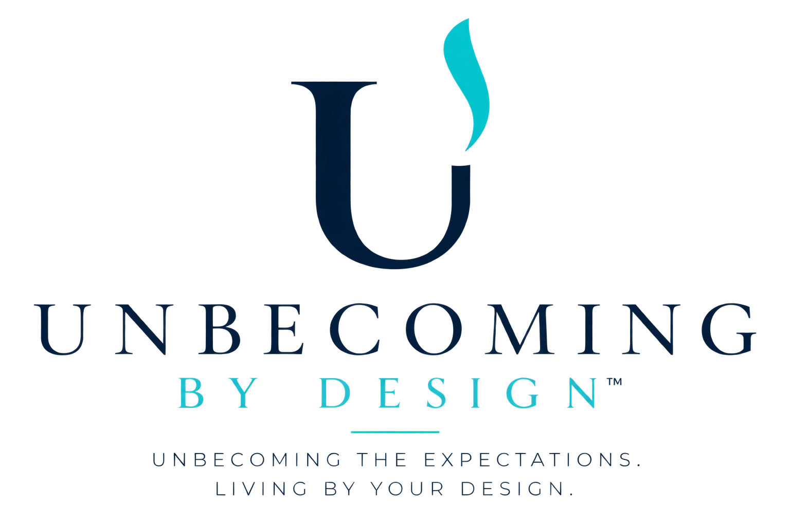

You have spent years becoming.
Becoming capable. Responsible. Successful. Adaptable. Needed.
Some of what you became is genuinely you. Some of it was shaped by expectations you learned so early — and carried so well — that you stopped recognizing them as expectations at all.
Unbecoming is the process of discovering the difference — and developing the capacity to live as your real and true self.
It isn't about dismantling your life. It's about recognizing what belongs to you, what doesn't anymore, and what becomes possible when your choices align with your personal design.
EXPECTATIONS
The roles, the shoulds, the beliefs you inherited before you were old enough to question them.
YOUR DESIGN
The energy, rhythm, and inner authority you were born with — before anyone told you who to be instead.
The work of Unbecoming lives in the space between them.
You do not have to understand conditioning, Human Design, NLP, or psychology to recognize the experience of living according to expectations. You know it when the life that looks perfectly reasonable from the outside no longer feels entirely like yours from the inside.
Three Ways to Unbecome
There is no single correct way to begin. There is only the way that fits where you are right now.
Unbecome At Your Own Pace
Download Unbecoming By Design and begin identifying the expectations, inherited beliefs, roles, and patterns that may no longer reflect who you are. Move through the work privately and at your own pace as you begin separating what you've learned to be from what is actually yours.
Begin On Your Own →Unbecome Together
Join a community of women doing their own Unbecoming — guided resources, downloadable exercises, live video conversations and classes, recorded sessions, and the company of women asking many of the same questions.
Join The Group →Personal Coaching
One-on-one coaching combines Human Design, NLP, and individualized development to examine the patterns shaping your decisions, relationships, identity, and direction — and to build practical ways of living with greater alignment and self-trust.
Explore Personal Coaching →Help employees become more effective by understanding what they may need to unbecome.
Every workplace is made up of people carrying assumptions about communication, leadership, conflict, responsibility, performance, and what they believe they are supposed to do to succeed. Some of those patterns create strong employees. Others quietly create miscommunication, frustration, disengagement, overfunctioning, avoidance, and unnecessary conflict.
Unbecoming By Design for Business brings Human Design, NLP, and practical personal-development principles into the workplace to help employees better understand how they naturally operate, recognize patterns that interfere with performance and communication, and work with greater self-awareness.
The objective isn't to turn the workplace into therapy. It is to help people understand themselves well enough to communicate better, make better decisions, take greater ownership, and work together more effectively.
Conversations that challenge what we've learned to call normal.
Diana Lynn speaks to organizations, women's groups, leadership teams, conferences, and communities about the identities we build around expectations — and what happens when we begin questioning them.
Through engaging conversations about Human Design, learned patterns, identity, decision-making, communication, and self-trust, audiences are invited to recognize the difference between the person they naturally are and the person they learned they needed to become.
The goal is not motivational hype. It is the kind of conversation that follows people home.
Invite Diana To SpeakUnbecoming the expectations. Living by your design.